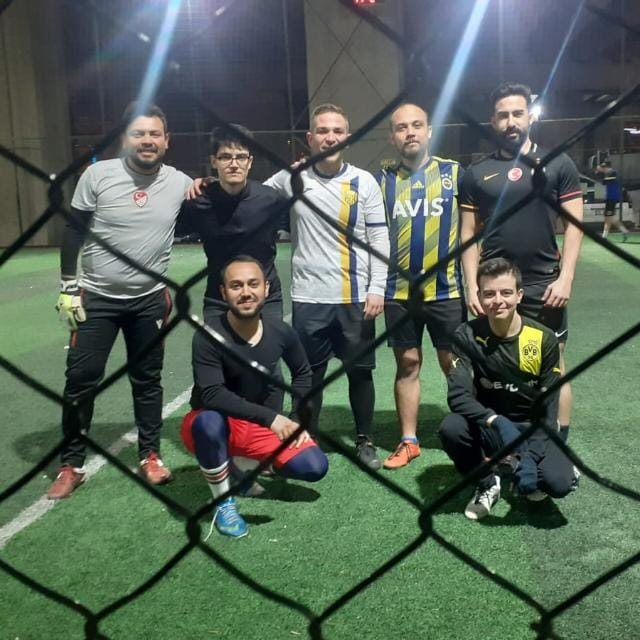

Teknolojiye olan ilgim, beni her zaman yeniliklere açık, öğrenmeye hevesli ve sürekli gelişmeye odaklı bir birey haline getirdi. Bu ilgim, şu anda kariyerimi front-end geliştirme alanında şekillendirmem için bir yol açtı. HTML, CSS ve JavaScript gibi temel teknolojilere olan tutkumla birlikte, kullanıcı deneyimini ve arayüz tasarımını en üst düzeye çıkarmayı hedefleyen bir geliştirici olarak kendimi sürekli geliştirmek için çalışıyorum.
Şu anda, front-end alanında daha derinlemesine bilgi edinmek ve bu alanda
sağlam adımlarla ilerlemek için bir eğitim alıyorum. Bu eğitim, teknik
becerilerimi geliştirmenin yanı sıra, estetik ve fonksiyonel web siteleri
tasarlama yeteneğimi de artırıyor. (Detaylar için
linke
tıklayabilirsiniz)
Kendi projelerimi hayata geçirerek, öğrendiklerimi pratiğe dökme ve gerçek
dünyadaki sorunlara yaratıcı çözümler bulma konusunda kendimi sürekli
olarak zorluyorum.
Teknoloji dünyasındaki ilgim, hayatımın diğer alanlarına da yansıyor. Spora olan tutkum, beni disiplinli ve takım çalışmasına yatkın biri haline getirdi. Futbol, basketbol ve masa tenisi gibi spor dallarında aktif olarak yer almak, hem bedenimi hem de zihnimi dinç tutuyor. Spor yaparken, stratejik düşünme ve hızlı karar alma yeteneklerimi geliştiriyorum; bu beceriler, aynı zamanda yazılım geliştirme süreçlerinde de işime yarıyor.

Bunun yanında, kutu oyunları da büyük bir ilgi alanım. Kutu oyunları, hem strateji geliştirme hem de arkadaşlarla kaliteli zaman geçirme açısından vazgeçilmezim. Bu oyunlar, analitik düşünme yeteneğimi ve problem çözme becerilerimi geliştirmeme yardımcı oluyor. Ayrıca, bu oyunlar sayesinde farklı bakış açılarını anlamayı ve en iyi sonuçları elde etmek için nasıl strateji oluşturulacağını öğreniyorum.
Hayatıma baktığımda, teknoloji, spor ve strateji odaklı bir yaşam tarzı görüyorum. Bu üç alan, beni hem profesyonel hem de kişisel olarak daha donanımlı ve güçlü bir birey haline getiriyor.
Gelecekte, front-end geliştirme alanında kendimi daha da geliştirerek, yaratıcı ve kullanıcı dostu web siteleri tasarlamayı amaçlıyorum. Teknolojiyi estetikle buluşturan, kullanıcıların ihtiyaçlarını karşılayan ve onlara en iyi deneyimi sunan projelerde yer almayı hedefliyorum. Hayalim, global bir etkiye sahip olan ve herkesin hayatını kolaylaştıran projelere imza atmak.
Özetle, teknolojiye olan tutkum, sporla birleşen disiplinim ve stratejiye dayalı düşünme yeteneğimle, hem kendimi hem de etrafımdakileri sürekli geliştirmeyi hedefleyen biriyim. Önümdeki yolda öğrenmeye, büyümeye ve başarıya ulaşmaya kararlıyım.